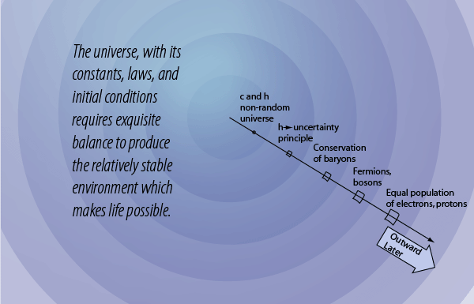

The Speed of Light c and Planck's Constant h: a Non-random Universe

In the motion of gas molecules and the decay of radioactive nuclei we see processes that appear to be purely random, but those apparently random events are in fact constrained. The nature of the constraints point to a framework that is non-random and in fact appears to be precisely dependable. The gas molecules are constrained by conservation laws, notably the conservation of energy and conservation of momentum, as well as the symmetry of Newton's third law. Those constraints allow us to predict with precision the behavior of the gas molecules collectively, yielding the ideal gas law. The random decay of radioactive nuclei are constrained by the balance of the fundamental forces, which is again very precisely dependable. Since that balance is established for a given nuclear species, the purely random decay of an individual nucleus can be translated into a precise collective behavior of decay, giving a radioactive halflife that is very dependable.
As representative of the collection of fundamental physical constants that constrain the behavior of nature, consider the speed of light c and Planck's constant h.
The number of digits shown is not a limit on the precision to which these constants are known, but just enough to make the point that they are precisely dependable quantities. Saying that the speed of light is constant is a more profound statement that it appears, as can be seen in a study of the ideas of relativity. Planck's constant through the Planck hypothesis and the uncertainty principle profoundly affects the entire structure and behavior of the universe. The fact that we can see the same "spectral fingerprints" of atoms from distant stars suggests that Planck's constant is a reliable constraint on the structure of the entire universe. As we model cosmology with the standard "big bang" model, all the tests of the model that I know about are consistent with the idea that the values of c and h are "front loaded" at the very beginning of the universe. They are offered here as evidence that the universe as we know it is definitely "non-random", but is constrained by a number of physical constants and symmetries that were a part of it from the beginning.
| The role of the uncertainty principle |
HyperPhysics  | R Nave |